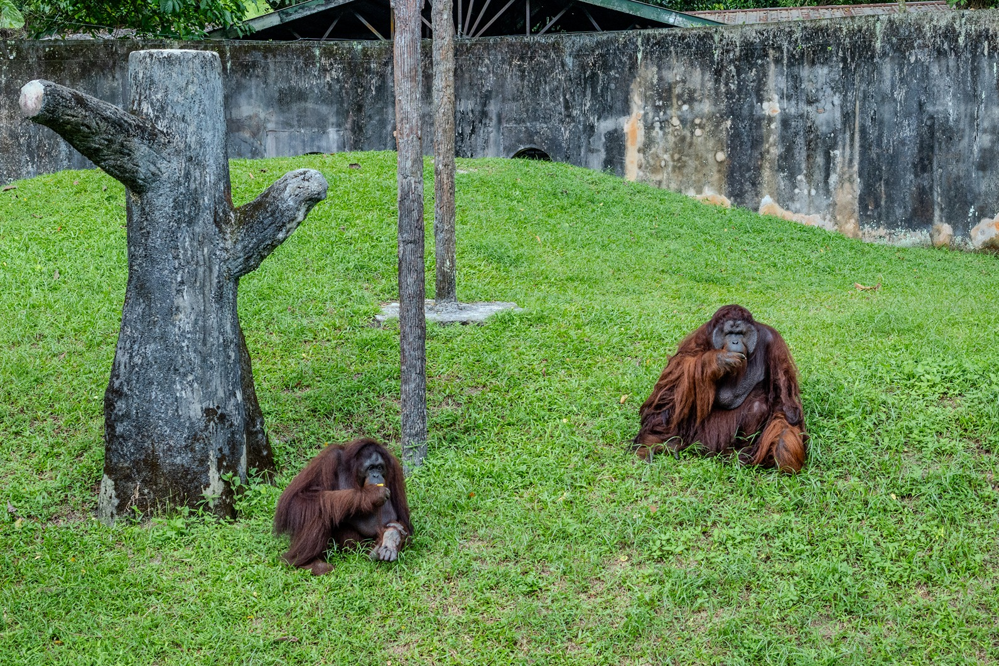
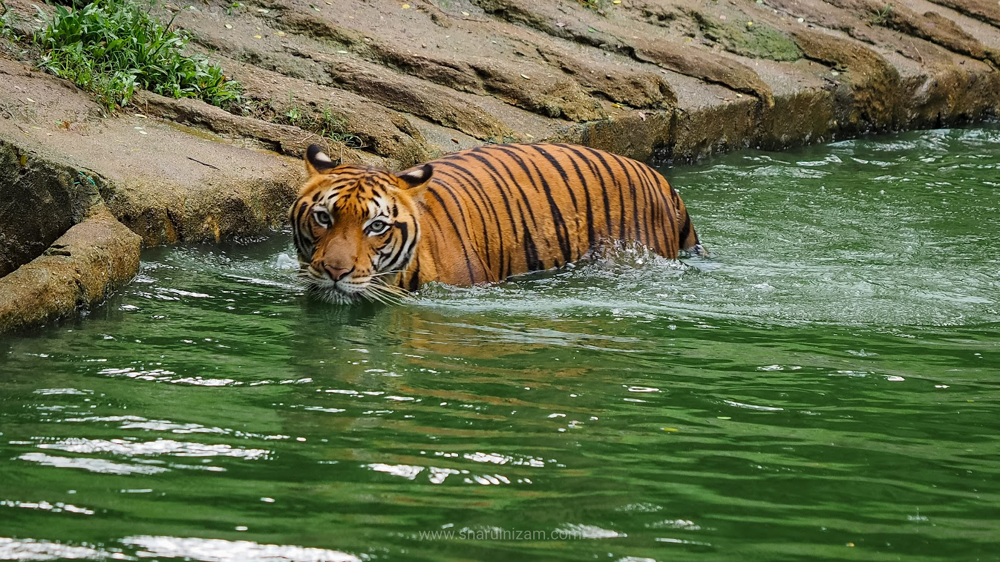
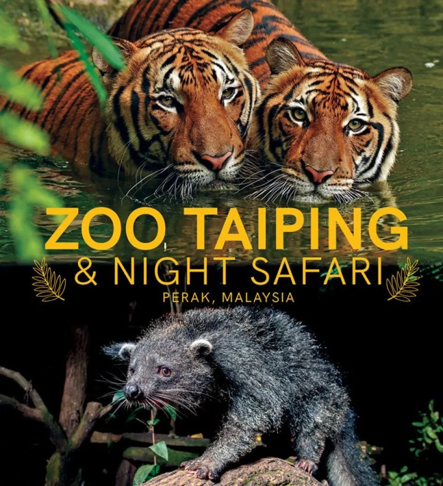
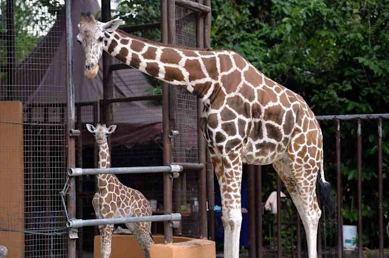

Zoo Taiping and Night Safari: A Wildlife Experience Like No Other
Zoo Taiping & Night Safari is one of Malaysia’s oldest zoos, located in the lush Taiping Lake Gardens in Perak. Home to over 1,200 animals, it offers a natural and shaded environment for wildlife. The Night Safari provides a unique experience to observe nocturnal animals in action, making it a fun and educational attraction for all ages.
Zoo Taiping and Night Safari, located in the serene town of Taiping, Perak, is one of Malaysia’s oldest and most well-established zoos. Opened in 1961, it is nestled within the beautiful Taiping Lake Gardens, surrounded by lush greenery and a tranquil atmosphere. The zoo spans over 36 acres and is home to more than 1,300 animals from over 180 species, including mammals, birds, reptiles, and amphibians. It is renowned for its natural setting, allowing animals to roam in spacious, open-concept enclosures that mimic their natural habitats.
One of the standout features of Zoo Taiping is the Night Safari, the first of its kind in Malaysia. This unique attraction allows visitors to observe nocturnal animals in action under special lighting that simulates moonlight. It provides a rare opportunity to see animals such as leopards, owls, and tapirs displaying their natural nighttime behaviors, offering an entirely different experience from a daytime visit.
The zoo is not only a place for recreation but also plays an important role in conservation and education. It actively participates in breeding programs for endangered species like the Malayan tiger and the orangutan. Educational tours and school visits are frequently organized to raise awareness about wildlife preservation and to inspire a deeper respect for nature.
Zoo Taiping and Night Safari remains a favorite destination for families, tourists, and animal lovers alike. With its commitment to animal welfare, conservation, and providing an engaging visitor experience, it continues to be a gem in Malaysia’s eco-tourism and a testament to the beauty and importance of wildlife.
